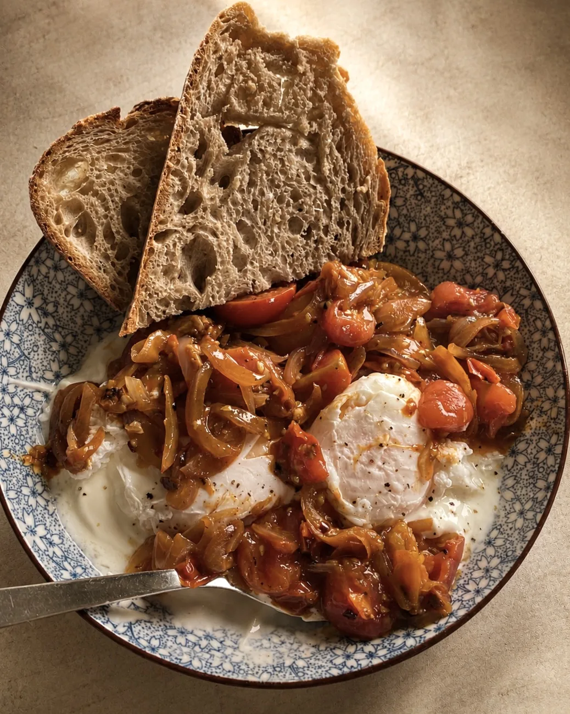

Turkish eggs
A Nieves's Kitchen take on Turkish çılbır
30 minTotal
25 minActive
EasyDifficulty
This is my take on Turkish eggs. The classic version, çılbır, is poached eggs over cold garlic yogurt with a spiced butter drizzle. I build on it with a slow-cooked base of onions and cherry tomatoes, somewhere between çılbır and menemen, so every spoonful has sweetness and warmth alongside the cool yogurt.
Ingredients
Serves 2
Per serving
440kcal
21 gprotein
16 gcarbs
33 gfat